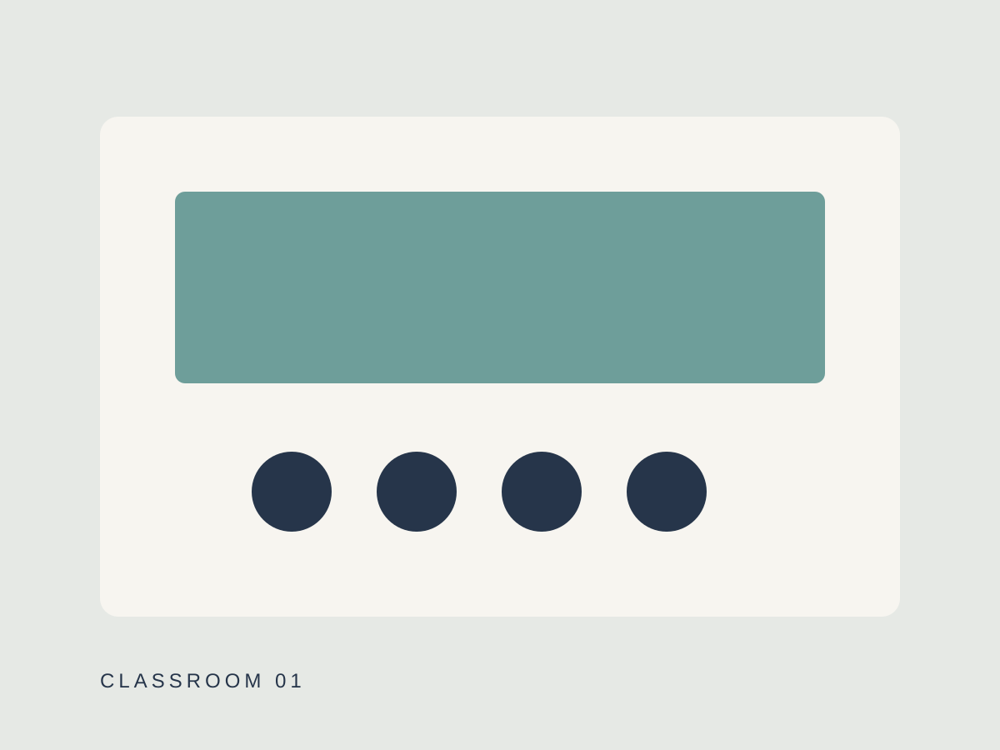
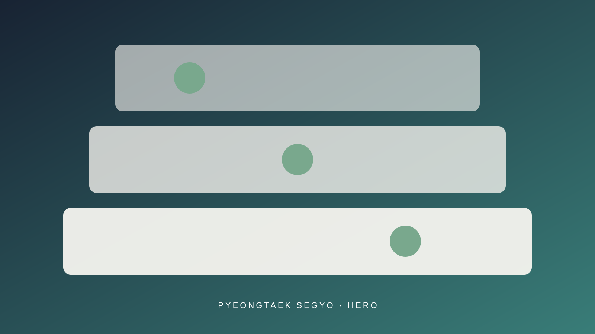
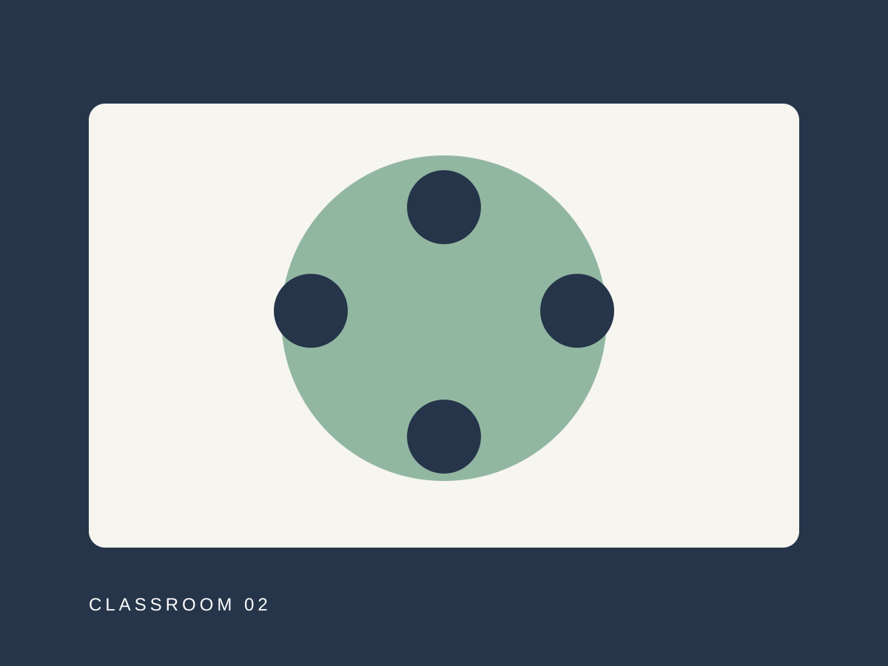
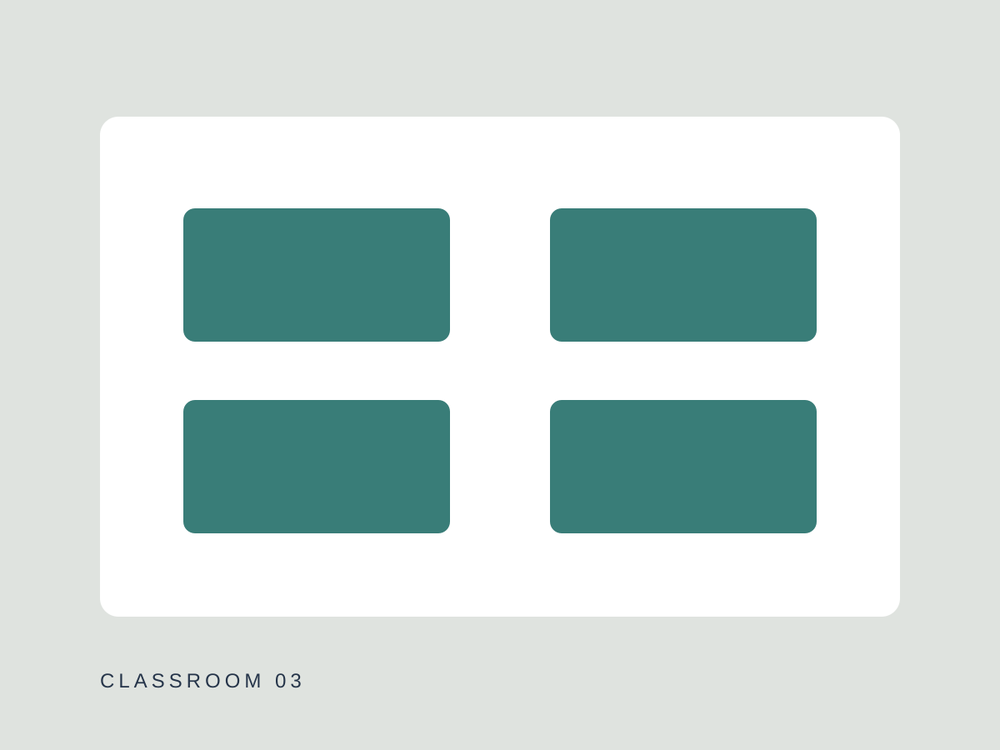
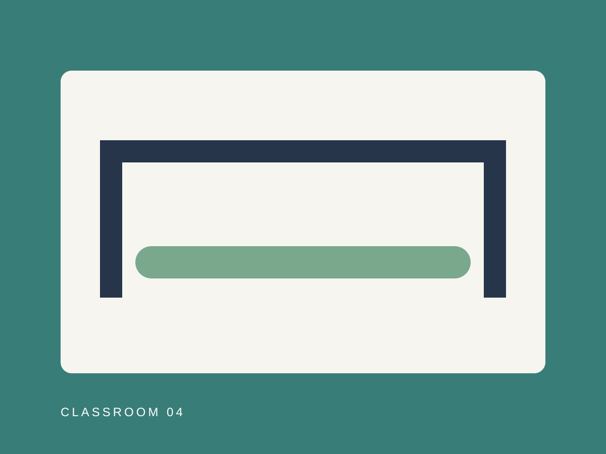
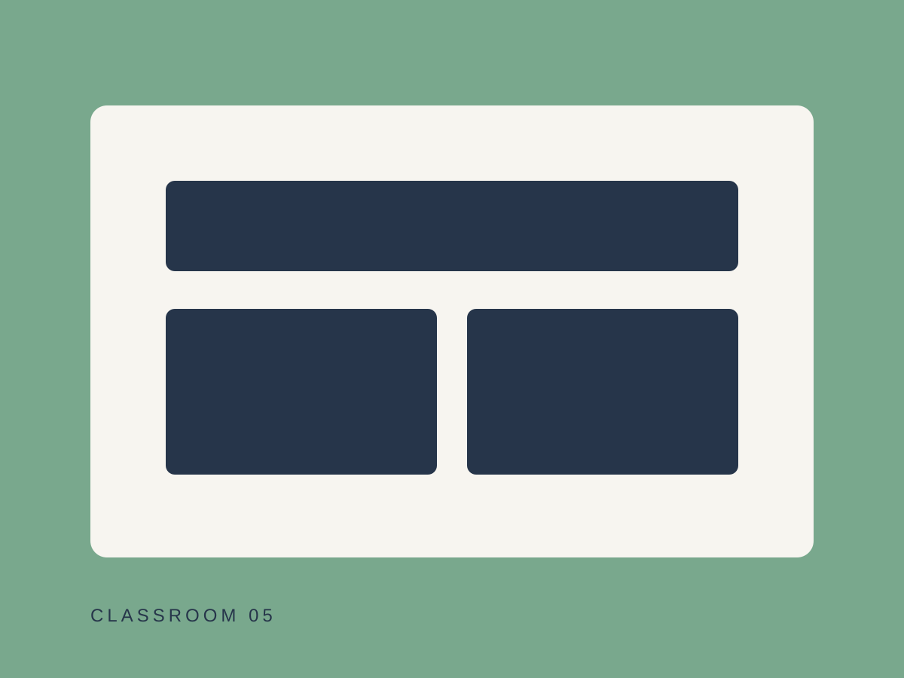
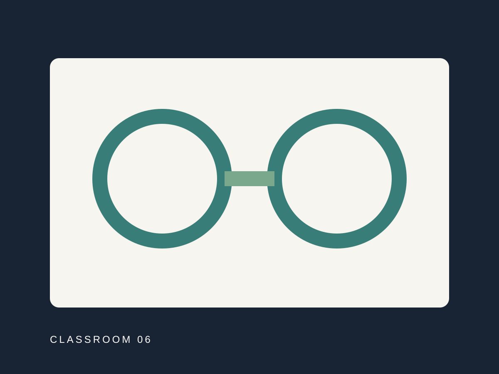

CLASSROOM 01
교실 01
- 위치한 층
- 준비 중
- 수용 인원
- 준비 중
- 주요 용도
- 준비 중

PYEONGTAEK SEGYO
총 3개 층과 6개의 교실로 구성된
L&C의 확장형 교육 공간입니다.
ABOUT THE SPACE
L&C 평택 세교점은 총 3개 층과 6개의 교실로 구성되어
다양한 규모와 방식의 프로그램을 운영할 수 있는 공간입니다.
교육, 대화, 활동과 모임이 각 공간의 특성에 맞게
유연하게 진행될 수 있도록 구성되어 있습니다.
FLOOR GUIDE
세 개 층이 배움과 소통의 흐름으로 연결됩니다. 층별 교실 배치는 확정 후 안내하겠습니다.
층별 상세 구성을 준비하고 있습니다.
층별 상세 구성을 준비하고 있습니다.
층별 상세 구성을 준비하고 있습니다.
CLASSROOMS
프로그램의 규모와 운영 방식에 따라
다양하게 활용할 수 있는 교육 공간입니다.






INSIDE L&C
대표 공간부터 층별 공간, 여섯 개 교실과 공용 공간까지 순서대로 준비하고 있습니다.
사진을 선택하면 크게 볼 수 있습니다.
VISIT US
정확한 위치와 방문 정보가 확정되는 대로 안내하겠습니다.
PARKING GUIDE
주차 정보를 준비하고 있습니다.
방문 전 평택 세교점 문의처를 통해
주차 가능 여부를 확인해주세요.